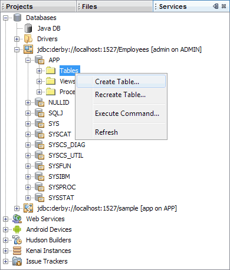

Learn Java- Complete Offline Beginners Guide
To create a new database, right click on Java DB again. From the menu that appears, select Create Database:
When you click on Create Database, you'll see a dialogue box appear:
Type a name for your database in the first box. Call it Employees. Type any User Name and Password (something a bit harder to crack than ours below!):
Click OK to create your database. It should then appear on the list:
Creating a Table in the Database
Now that the database has been created, you need to create a table in the database. To do so, right click on your database. From the menu that appears select Connect:
When a connection is made, you'll see some default folders for Tables, Views, and Procedures (see further down if your screen is not like this):
To create a new table in your database, right click the Tables folder. From the menu that appears, select Create Table:
If you don't see just the three folders above, but have something like this instead:

Click the APP entry, and then right-click on Tables.
When you click on Create Table, a dialogue box appears. Either this one:
Or this one:
From here, you not only type a name for your table, but you also set up the columns for the table.
In the Table Name at the top, delete the default name of Untitled. Type a new name for your table. Call it Workers. You'll then have a table called Workers, which is in the Employees database.
But you can't click OK just yet as the table has no columns in it. We want to create columns with the following names:
ID
First_Name
Last_Name
Job_Title
The ID column will hold a unique identifying number. This will identify a row in the table. A column with unique data in it is known as a Primary Key. Because it's the Primary Key, the column has to hold data: It can't hold a null value. (A null value just means there's no information there.)
If your Create Table dialogue box is like the first one, then put a tick in the box for Key. When you tick the Key box, check marks will also appear for Index and Unique. Now enter a title in the Column Name area. Type ID:

You now need to specify what kind of data is going in to the column. For our ID column, we'll have Integers. So scroll along until you come to Data Type. Click on Data Type and a drop down list will appear. From the drop down list, select Integers:
If your dialogue box is like the second one, then you need to click the Add Column button to add your first table column. You'll see another dialogue box appear. This one:
The NAME is the name of the column in the table, like ID, First_Name, etc. The TYPE is the DATA TYPE, Integer, VARCHAR, etc. Click the dropdown list to see more. Then check or uncheck the CONSTRAINTS boxes as indicated below:
Click OK and you should be returned to the Create Table dialogue box:
We now have enough for the ID column in the table. Click the Add Column button on the right to add a new column to the table. Enter the following values for this column (VARCHAR means a variable number of characters):
Key: Unchecked
Index: Unchecked
Null: Unchecked
Unique: Unchecked
Column Name: First_Name
Data Type: VARCHAR
Size: 20
For the third column in your table, enter the following values:
Key: Unchecked
Index: Unchecked
Null: Unchecked
Unique: Unchecked
Column Name: Last_Name
Data Type: VARCHAR
Size: 20
For the final column, here are the values to enter:
Key: Unchecked
Index: Unchecked
Null: Unchecked
Unique: Unchecked
Column Name: Job_Title
Data Type: VARCHAR
Size: 40
When you're finished, your Table dialogue box should look like this:
Click OK when you've entered all the information. Your table and table columns will then be created:
The next thing to do is to add some records to the database table. We'll do that next.